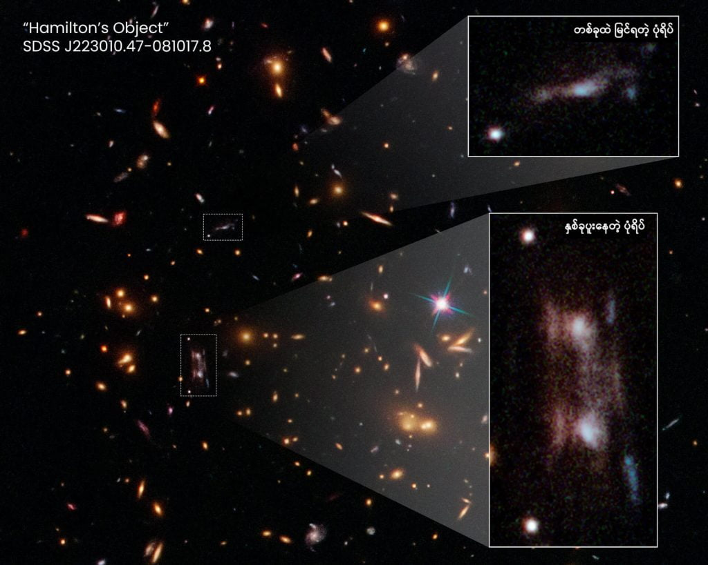

၂၀၁၃ ခု နှစ်မှာ ချွတ်ဆွတ် တူတဲ့ ဂလက်ဆီ အမွှာ ညီနောင်ကို နက္ခတ် ပညာရှင်တွေ ရှာဖွေ တွေ့ရှိ ခဲ့ချိန်မှာတော့ အတော်များများ အံ့အား သင့်ကုန် ကြပါတယ်။ စကြာဝဠာရဲ့ အလွန် ဝေးကွာလှတဲ့ အရပ်မှာ နှစ်ခု ပူး နေတဲ့ ဂလက်ဆီ နှစ်ခုကို မမျှော်လင့်ပဲ တွေ့ရှိ ခဲ့ကြတာ ဖြစ်ပါတယ်။ ဒီ နှစ်ခုဟာ ဘယ်လောက်တောင်မှ ထူးထူး ဆန်းဆန်း တူနေလဲ ဆိုရင် တစ်ခုနဲ့ တစ်ခုက မှန် ခံပြီး ကြည့်သလို Mirror image ပုံ ဖြစ်နေတာပါ။
အခု နောက်ဆုံး တင်ပြတဲ့ သုတေသန စာတမ်း တစ်စောင် အရ ဒီ ထူးဆန်းတဲ့ အမွှာညီနောင် ဂလက်ဆီ ပြဿနာကို ဖြေရှင်း နိုင်ခဲ့ပြီ လို့ဆိုပါတယ်။ ဒီ ထူးဆန်းတဲ့ အမွှာညီနောင် ဂလက်ဆီ ပြဿနာရဲ့ အဖြေမှာ အခုထိ သိပ္ပံ ပညာရှင်တွေ ရှာ မတွေ့သေးတဲ့ ထူးဆန်းတဲ့ အမှောင်ဒြပ် (Dark Matter) တွေက အဖြေ တစ်ခု အဖြစ် ပါဝင်နေတယ် လို့ ဆိုပါတယ်။
ဒီ ဂလက်ဆီ အမွှာကို သူ့ကို ရှာဖွေ တွေ့ရှိ ခဲ့သူရဲ့ အမည်ကို အစွဲပြုပြီး ဟယ်မစ်တန် ဝတ္ထု (Hamilton Object) လို့ အမည် ပေးထားပါတယ်။ (ဂလက်ဆီ ဖြစ်ပြီး ဘာလို့ ဂလက်ဆီ လို့ အမည် မပေးပဲ ဝတ္ထု လို့ အမည် ပေးလဲ မမေးကြ ပါနဲ့ ခင်ဗျာ။ ကျွန်တော်လဲ မသိပါဘူး။) ဒီ အမွှာ ဂလက်ဆီ ကို ဟတ်ဘယ် နက္ခတ်ကြည့် မှန်ပြောင်းကြီးက ရိုက်ကူးထားတဲ့ ဓါတ်ပုံတွေကို စစ်ဆေးရင်း နက္ခတ် ပညာရှင် Timothy Hamilton က လွန်ခဲ့တဲ့ ၁၀ နှစ် နီးပါး ခန့်က အမှတ် မထင် ရှာဖွေ တွေ့ရှိ ခဲ့တာ ဖြစ်ပါတယ်။
၂၀၁၅ ခုနှစ် အထိ ဘာ့ကြောင့် ဒီလို အမွှာပူး ဖြစ်နေလဲ စဉ်းစားလို့ မရ ခဲ့ကြ ပါဘူး။ ဒါပေမယ့် ၂၀၁၅ ခုနှစ်က အာကာသ နက္ခတ် အစည်း အဝေး တစ်ခုမှာ ဟယ်မစ်တန် က ဒီ ကိစ္စနဲ့ ပါတ်သက်လို့ တင်ပြ အကြံဉာဏ် တောင်းခဲ့ ပါတယ်။ ဒီ အစည်း အဝေး တက်ရောက် သူတွေ ထဲက တစ်ဦး ဖြစ်တဲ့ ဟာဝိုင်ယီ တက္ကသိုလ် က နက္ခတ် ပညာရှင် ရစ်ချတ် ဂရစ်ဖစ် (Astronomer Richard Griffiths of the University of Hawaii) က ဒါဟာ အလွန် ရှားပါးတဲ့ ရူပ ဗေဒ သဘာဝ တစ်ခု ဖြစ်တဲ့ “ဆွဲငင်အား မှန်ဘီလူး (Gravitational Lensing)” ကြောင့် ဖြစ်နိုင်တယ် လို့ အကြံပြု ဆွေးနွေး ခဲ့ပါတယ်။
ဒီ “ဆွဲငင်အား မှန်ဘီလူး” ဆိုတာ နားလည် ဖို့ဆို အိုင်စတိုင်းရဲ့ နှိုင်းယှဉ်ခြင်း နိယာမ ကို ပြန်ကောက်ရမှာ ဖြစ်ပါတယ် (သူနဲ့ လွတ်တာလဲ တစ်ခုမှ မရှိတော့ ပါလား)။ အိုင်းစတိုင်းက အလင်းရောင်ဟာ ဒြပ်ထု ကြီးမားတဲ့ (တနည်းအားဖြင့် ဆွဲငင်အား ကြီးမားတဲ့) အရာ ဝတ္ထု တွေနားက ဖြတ်သွားရင် ဒီ ဝတ္ထု တွေရဲ့ ဆွဲအားကြောင့် ကွေးသွားတယ်လို့ ဆိုခဲ့ပါတယ်။
ဒီတော့ အလွန် ဆွဲငင်အား ကြီးတဲ့ Black Hole တွေ ဂလက်ဆီ ကြီးတွေ အနားက ဖြတ်သွားတဲ့ အလင်းတန်း တွေဟာ သိသိ သာသာ ကွေးသွားပါတယ်။ ဒီလို ကွေးသွားတာက ဘာနဲ့ တူလဲ ဆိုတော့ မှန်ဘီးလူးက အလင်း စု ပေးလိုက် သလိုမျိုးနဲ့ တူနေပါတယ်။ ဒါ့ကြောင့် ဒါကို “ဆွဲငင်အား မှန်ဘီလူး” လို့ ခေါ်တာ ဖြစ်ပါတယ်။

ဒီ “ဆွဲငင်အား မှန်ဘီလူး” ကြောင့် ဂလက်ဆီ တစ်ခုထဲကို ပုံရိပ် နှစ်ခု အနေနဲ့ မြင်ရတယ် ဆိုတဲ့ ရှင်းလင်းချက်က ထပ်တူ တူတဲ့ အမွှာ ဂလက်ဆီ နှစ်ခု ဆိုတဲ့ အဖြေထက် ပိုပြီး အဓိပ္ပါယ် ရှိပါတယ်။ အထူးသဖြင့် နောက်ထပ် ပုံရိပ် တစ်ခု ကို အနီးမှာ ထပ်ပြီး ရှုာတွေ့ ထားပြန်တော့ ပိုသေခြာ သွားပါတယ် (အောက်ပုံ ကြည့်ရန်)။ ဒါပေမယ့် ဒီအဖြေ ကလဲ လုံးဝ ပြီးပြည့်စုံတဲ့ အဖြေတော့ မဟုတ်ပါဘူး။
ဒီနေရာမှာ မေးစရာ မေးခွန်း တစ်ခု ပေါ်လာ တာက ဒီလို ဆွဲငင်အား မှန်ဘီလူး ဖြစ်အောင် ဒီ ဂလက်ဆီနဲ့ ကျွန်တော်တို့ ကမ္ဘာ ကြားထဲမှာ ဘယ်လို အရာဝတ္ထုက ခံနေလို့လဲ ဆိုတာပါပဲ။ ဒီလို သဘာဝ ဖြစ်စေဖို့က ဒြပ်ထု အတော့်ကို ကြီးတဲ့ အရာဝတ္ထု တစ်ခုခု ဖြစ်ဖို့ လိုအပ်ပါတယ် (ဥပမာ Black Hole သို့ ဂလက်ဆီ)။ ဒါပေမယ့် သိပ္ပံ ပညာရှင်တွေ သိသလောက်က ဒီ ဂလက်ဆီ နဲ့ ကျွန်တော်တို့ ကြားထဲမှာ ဘာမှ ရှိမနေပါဘူး။

ထုံးစံ ဆိုရင် ဒီလို ရှာဖွေ တွေ့ရှိ မှုတွေက ပြောင်းပြန် ပြန်သွား တာပါ။ ဆိုလိုတာက ကြားက ဂလက်ဆီ (သို့) Black hole ကို ရှာတွေ့ပြီးမှ သူ့ကြောင့် ဖြစ်လာတဲ့ ဆွဲငင်အား မှန်ဘီလူးကို လိုက်ရှာ ကြတာပါ။ ဒါပေမယ့် အခုတော့ ဆွဲငင်အား မှန်ဘီလူး ရှာတွေ့ပြီးမှ သူ့ကို ဖြစ်စေတဲ့ အရာဝတ္ထုကို လိုက်ရှာ ကြတာပါ။
သူတို့ အဖွဲ့ရဲ့ တွက်ချက်မှု အရ အခု ဟက်မစ်တန် ဝတ္ထု ဂလက်ဆီ ဟာ ကမ္ဘာကနေ အလင်းနှစ် ၁၁ ဘီလီယံ (အလင်းနှစ် သန်း ၁၁,၀၀၀) လောက် အကွာမှာ ရှိပါတယ်။ ဒီ ဂလက်ဆီနဲ့ ကမ္ဘာကြား အလင်းနှစ် ၇,၀၀၀ လောက် အကွာမှာတော့ အရောင် ခပ်မှိန်မှိန် ဂလက်ဆီ ကြယ်အစု အဝေးကြီး တစ်ခု ရှိနေပါတယ်။
ဒီ ဂလက်ဆီ ကြီးရဲ့ပုံသဏ္ဍာန်က ခရုပတ်ပုံပါ။ ဒါပေမယ့် ခရုပတ်ခွေ အပြားက ကျွန်တောတို့ဖက် မျက်နှာ လှည့်နေတာ မဟုတ်ပဲ ဘေးတိုက် ဖြစ်နေတာမို့ ဒီ ဂလက်ဆီကို ကမ္ဘာက ကြည့်တော့ အလွယ်တကူ မမြင်ရတာ ဖြစ်ပါတယ်။
ကွန်ပြူတာ နဲ့ တွက်ချက်ပြီး ပုံတူ ဖန်တီးမှု Simulation တွေ အရ ဒီလို ထပ်တူညီတဲ့ အမွှာပုံရိပ် နှစ်ခုနဲ့ ခပ်လှမ်းလှမ်းက နောက်ထပ် ပုံရိပ် တစ်ခု မြင်ရဖို့ဆို ကြားခံ ဂလက်ဆီထဲမှာ မမြင်ရတဲ့ အမှောင်ဒြပ် (dark matter) တွေဟာ အတော်လေးကို ညီညီ ညာညာ ပျံ့နှံ့ နေဖို့ လိုအပ်တယ် လို့ ဆိုပါတယ်။ နောက်ပြီး ဒီ Dark Matter ဒြပ်ထု တွေဟာ ဆိုရင်လဲ အတော်လေး သေးငယ်တဲ့ နေရာလေးမှာ သိပ်သိပ်သည်းသည်း စုနေဖို့ လိုအပ်ပါတယ်။
ရစ်ချတ် ဂရစ်ဖစ်က “ရေကန်ပေါ်ကို နေရောင် ထိုးကျတဲ့ အခါ ရေကန် အောက်မှာ လှုင်းကြက်ခွပ် လေးတွေ ပုံစံ အလင်းရောင် အကွက် အပျောက် လေးတွေ ပေါ်နေတာ မြင်ဖူး ကြမှာပါ။ ဒီ ရေ ကန် အောက်ခြေမှာ ပေါ်နေတဲ့ အလင်းကွက် လေးတွေက အခု ကျွန်တော်တို့ ပြောနေတဲ့ ဆွဲငင်အား မှန်ဘီလူး သဘောပါပဲ။ ရေမျက်နှာ ပြင်မှာ ဖြစ်ပေါ်လာတဲ့ လှိုင်းကြက်ခွပ် လေးတွေက မှန်ဘီလူး လို ဖြစ်ပြီး နေရောင်ကို ရေကန် ကြမ်းပြင်မှာ အကွက် အတွန့် လေးတွေ ပုံပေါ်အောင် လုပ်ပေးတာပါ” လို့ ရှင်းပြပါတယ်။
အခု ဖြစ်စဉ် မှာလဲ အမှောင်ဒြပ်တွေ သိပ်သိပ်သည်းသည်း စုနေတော့ အဲ့သည် အနားက အာကာသ (space-time) ထဲမှာ လှိုင်းကြက်ခွပ်လို အတွန့် အခေါက် ကလေးတွေ ဖြစ်လာပါတယ် (ဒီနေရာမှာ အာကာသ ကိုယ်နှိုက်က တွန့်ခေါက်ပြီး လှိုင်းကြက်ခွပ် ထလာတာပါ)။ အလင်းက အာကာသ လှိုင်းကြပ်ခွပ် လေးတွေ ကြားက ဖြတ်သွားရတော့ ပုံလဲ နဲနဲ ပျက်သွားပါတယ်။ ဒီတော့ ပုံရိပ်က နှစ်ခု သုံးခု ကွဲထွက် သွားတာပါ။
ဒီ အမှောင်ဒြပ်ကြောင့် ဖြစ်လာတဲ့ “အာကာသ လှိုင်းကြက်ခွပ်” လေးတွေဟာ အမှောင်ဒြပ် အကြောင်း သုတေသန ပြုနေကြတဲ့ သိပ္ပံ ပညာရှင်တွေ အတွက် အများကြီး အကျိုး ရှိပါတယ်။ ဒီလို ဖြစ်စဉ် တွေကို လေ့လာခြင်း အားဖြင့် အာကာသ ထဲမှာ အမှောင်ဒြပ်တွေ ဘယ်လို ပျံ့နှံ့ နေလဲ ဆိုတာကို သိပ္ပံ ပညာရှင်တွေ မှန်းဆလို့ ရလာပါတယ်။
ဥပမာ အနေနဲ့ ပြောရရင် Hubble နက္ခတ်ကြည့် တယ်လီစကုပ် မှန်ပြောင်းကြီးက ရတဲ့ ပုံနဲ့ ကွန်ပြူတာနဲ့ တွက်ထုတ် ပေးထဲ့ ပုံ နှစ်ခုကို ယှဉ်ကြည့် ခြင်းအားဖြင့် အမှောင်ဒြပ်တွေ ဒီ အရပ် ဒေသမှာ ဘယ်လို့ ပျံ့နှံ့ နေလဲ ဆိုတာကို မှန်းဆလို့ ရလာပါတယ်။ ဒီ အမှောင်ဒြပ်တွေ ဘယ်လောက်ထိ သိပ်သိပ် သည်းသည်း ရှိနေလဲ၊ ညီညီညာညာ ပျံ့နေတာလား ဟိုနား နည်းနည်း ဒီနား နည်းနည်း စုနေလား အစ ရှိတာတွေကို မှန်းဆ တွက်ချက်လို့ ရလာပါတယ်။
အခု သုတေသန စာတမ်းကို Monthly Notices of the Royal Astronomical Society (တော်ဝင် နက္ခတ်ဗေဒ အသင်းကြီး၏ လစဉ် အသိပေးချက်) ဂျာနယ်မှာ တင်ပြ ထားတာ ဖြစ်ပါတယ်။
References:
Eerie Discovery of 2 ‘Identical’ Galaxies in Deep Space Is Finally Explained | Science Alert
Mystery solved! Bizarre Hubble double galaxy caused by ‘ripple’ in space | Space